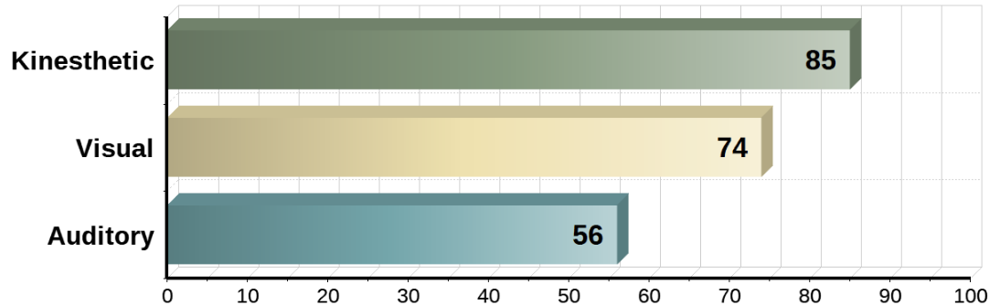

- My Personal Information
- My Ideal Job
- My Personal Profile
- My Project Idea
- My Email

Logisticians pride themselves on their integrity. People with this personality type mean what they say, and when they commit to doing something, they make sure to follow through.
This personality type makes up a good portion of the overall population, and while Logisticians may not be particularly flashy or attention-seeking, they do more than their share to keep society on a sturdy, stable foundation. In their families and their communities, Logisticians often earn respect for their reliability, their practicality, and their ability to stay grounded and logical, even in the most stressful situations.
Kinesthetic style is learning by doing. I learn in this manner whenever I capture new information through the process of physical activity. It is often referred to as a hands-on learning experience.
Consider how I learned to ride a bicycle. I learned by getting on a bike to experience and practice balancing, steering and pedaling. This experience ultimately taught me how to ride.

I am likely able to envision a clear direction for the company and communicate my plans in a way that excites others. This is an essential skill, because employees will be much more willing to achieve a goal if they are passionate about it. The manner in which i communicate my vision is essential. For instance, if i present my ideas to others in a confident manner, they will likely go over more easily.
People who excel in this area are innovative visionaries who are confident in their ability to persuade and convince others. They consider it essential to make those they lead aware of, as well as part of, their vision.